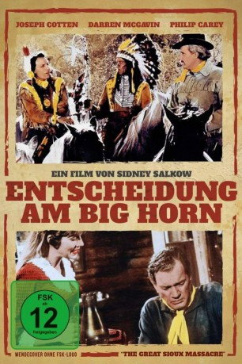

#9875 Entscheidung am Big Horn
Alternativ: The Great Sioux Massacre
 
 IMDB-Wertung: 5.1 / 10
IMDB-Wertung: 5.1 / 10  Metascore: 0
Metascore: 0 
Nach der Schlacht am Little Big Horn, in der Oberst Custer am 2. Juli 1876 mit 260 Soldaten des 7. Kavallerie-Regiments bis auf den letzten Mann von den Sioux getötet wurde, muss sich der amerikanische Major Reno vor einem Kriegsgericht wegen Feigheit vor dem Feind verantworten. In Captain Benton findet er einen eindrucksvollen Entlastungszeugen. Dieser schildert dem Gericht, wie es dazu kam, dass der ehrgeizige Custer Häuptling Sitting Bull und seinen Kriegern in die Falle ging.
Jahr: 1965
Dauer: 90 Minuten
FSK: 12
Land: USA Studio: ColumbiaTonspuren: DD2.0 - ,
Untertitel:
Auflösung: 1080p (1920x816) Größe: 6481 MB
Genre: Western
Regisseur: Sidney Salkow
Drehbuch: Marvin A. Gluck, Sidney Salkow, Marvin A. Gluck
Soundtrack: Emil Newman, Edward B. Powell
Darsteller:
Datei: X:\HD-Western-1960-1979\Entscheidung am Big Horn (1965, FSK12, 1920x816).mkv seit 08.11.2018
Festplatte: HD Eastern+Western
 Es gibt insgesamt 110 Filme in der Gruppe 'HD-Western-1960-1979'
Es gibt insgesamt 110 Filme in der Gruppe 'HD-Western-1960-1979'